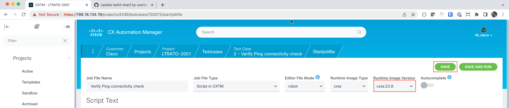

Step 3: Configure the script and execute it¶
Value Proposition: In this step, we will create a script and execute it, to run the desired tests against the device under test.
Expand the left-hand navigational panel and scroll down to Test Cases and click on the Test Cases sub-section.
Let’s now add a new test case by clicking on the + button.
Click on the Open link to display the test case details.
The New Job File will be displayed, this screen contains an editor for ROBOT framework code execution. By default, this editor is populated with the basic ROBOT automation testing job-file. This default job-file that is loaded can be customized to your testing needs in the left-hand navigational panel.
Replace the
*** Test Cases ***section with the following contents:*** Test Cases *** 1. CONNECT TO DEVICE UNDER TEST (SSH) connect to device "nx-osv-1" 2. VALIDATE VERSION ON THE DUTS AND INITIALIZING LOGGING run "show version" run "show inventory" 3. COLLECT RUNNING CONFIGURATION FROM ALL DUTS initialize logging to "show_version_and_running_configuration.txt" # initialize logging activate report "show_version_and_running_configuration.txt" run "show ip route" run "show ip route summary" disable report logging #Disabling the show_version_and_running_configuration.txt logging report 4. VERIFY IPV4 ROUTE BEFORE CLEAR COMMAND ON DUT1 run parsed json "sh ip route summary" ${ROUTE_COUNT_BEFORE}= get parsed "routes" #IPV4 route count before clear ipv4 routes Set Global Variable ${ROUTE_COUNT_BEFORE} 5. CLEAR IPV4 ROUTES ON DUT1 run "clear ip route *" ${status}= Run Keyword And Return Status output contains "Clearing ALL routes" Run Keyword If '${status}' == 'False' Fatal Error ++UNSUCCESSFUL++ ${DUT1} IPv4 routes not successfully cleared ... ELSE set test message ++SUCCESSFUL++ IPV4 routes cleared successfully \n append=True 6. VALIDATE IPV4 ROUTES AFTER CLEAR COMMAND ON DUT1 sleep 30 #For learning routes run parsed json "sh ip route summary" ${ROUTE_COUNT_AFTER}= get parsed "routes" #IPV4 route count after clear ipv4 routes Run Keyword If '${ROUTE_COUNT_AFTER}' != '${ROUTE_COUNT_BEFORE}' FAIL ++UNSUCCESSFUL++ ${DUT1} - Either few or all IPv4 routes are not learnt after 'clear ipv4 route' command ... ELSE set test message ++SUCCESSFUL++ All IPV4 routes are learnt successfully after 'clear ipv4 route' command\n append=True
Note
ROBOT is readable by everyone! i.e. run “show inventory”
The above statement in plain English from the Robot Framework test case is called a ROBOT keyword. These are generic and reusable terms. Our automation developers define and implement Robot Framework keywords in Python behind the scenes, allowing customers and engineers to focus on the breakdown of test steps for readability and usability using ROBOT. Our developers & testers work together to create more keywords that express different test automation scenarios. Customers can also add their keywords if needed. As keyword count increases, test automation velocity increases as less time is spent re-writing the same automation (how many times have you seen the same interface flap code repeated!?)
We now have a full ROBOT test. Select the latest “Runtime Image Version” container that has all these keyword libraries. Select
cxta:23.8. Select Save to save this job file.Tip
In case you see a warning message about Autocomplete may not work when you select the Runtime Image Version, please ignore it and continue.
We are now ready to run our first ROBOT test case! Click on the Run button in the execution section to begin the test.
The test will now show STARTED.
Note
You can click on the Task Id link to watch the job execution in real time. This test is executed very quickly. After a minute, if your screen does not load (stays black), click the job-file name ‘Verify routing information’ in the link at the top of the page to get back to the testing summary page.
The execution status will show COMPLETED for successful execution. If the execution status is anything other than COMPLETED, please reach out to your session speakers.
Refresh the page to see the execution details and move to the Run History section.
The Run History section will show all previous runs of this test case. Each test case run has a time stamp and the job result. Click the job time stamp to review the test results when the ROBOT test case is finished executing.

Click on the
log.htmlin the artifact section to view the full audit trail of the script events and the logs associated with the execution.Click on + to expand this keyword section. Notice that by expanding the various keywords, you can see more detail at each step. The steps here show that the first keyword load testbed loaded the topology file you created earlier in this exercise. The next step connects to device “nx-osv-1” using the connection information provided to connect to the device.
Expand Step #4 and Step #6 to view the output execution for “show ip route summary” of existing route count on the device before and after clearing routes on Step #5 to make sure they are back in a good operating state.
{kind=link}
{kind=link}
{kind=link}
{kind=link}
{kind=link}
{kind=link}
{kind=link}
{kind=link}
{kind=link}
{kind=link}
{kind=link}
{kind=link}
Note
Within this step, you have created a test case, configured the test case to run a ROBOT test, and executed the test case. You have also reviewed the results of the test case execution where you verified the routing information on the device. You can now move on to the next step to learn how to verify connectivity.
Section author: Nandakumar Arunachalam <narunach@cisco.com>, Jinrui Wang <jinrwang@cisco.com>, Luis Rueda <lurueda@cisco.com>, Jairo Leon <jaileon@cisco.com>